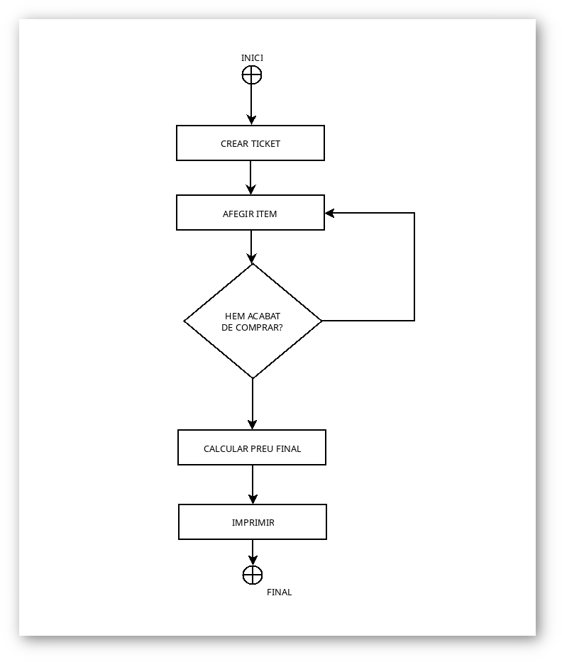
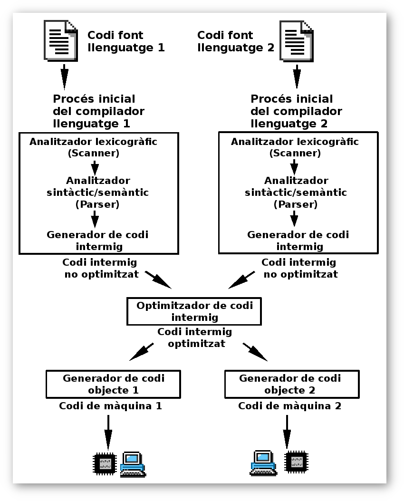

Tema 1. Introducció a la programació
Introducció
Un programa és: Segons el diccionari normatiu valencià (DNV)
Conjunt d'instruccions detallades i codificades que es donen a un sistema informàtic perquè execute unes determinades operacions.
Segons el Termcat:
Conjunt de dades i d'instruccions codificades que són l'expressió completa d'un procediment que pot executar un sistema informàtic.
Per tant programar podrien dir que és l’acció d’elaborar un programa. En altres paraules un programa és un conjunt d’instruccions escrites en un llenguatge de programació que s’utilitzen per donar ordres o indicacions a un ordinador. En aquest primer tema, veure una sèrie de conceptes bàsics que seran necessaris per entendre que és la programació.
Conceptes bàsics
Algorisme vs Programa
Un algorisme és un conjunt ordenat i finti d’operacions o instruccions a seguir que permeten trobar la solució a un problema. Per exemple: algorisme de la suma, la resta, la multiplicació o la divisió. Per tal de fer una suma de xifres de més d’un digit cadascuna, el que es diu comunament sumar portant, hem de seguir unes ‘instruccions’ que si les realitzem de forma correcta, obtenim el resultat. Doncs bé, eixes ‘instruccions’ serien l’algorisme. Un programa no és més que un algorisme les ‘instruccions’ del qual les executa un ordinadorEn realitat aquesta fase
Característiques d'un programa
Un algorisme posteriorment convertit a programa ha de complir una sèrie de característiques: - Finit: ha de començar i acabar. - Llegible: un programa s'escriu una vegada però es llig moltes. - Modificable: ha de poder evolucionar. - Eficient: No utilitza més recursos dels necessaris - Modular: s'ha de dividir en parts el qual millora la legibilitat. - Estructurat
Llenguatges de programació
De la mateixa manera que dues persones es comuniquen entre sí utilitzant un llenguatge natural, una persona es comunica amb una màquina utilitzant un llenguatge de programació. Evidentment, un llenguatge de programació ha de ser més simple i gens ambigu al contrari de com passa amb els llenguatges naturals. Els llenguatges de programació solen complir les següents característiques: - Existeix un nombre finit de paraules reservades que podem usar: for, var, int, while... És a dir, un llenguatge de programació té un conjunt lèxic de paraules amb un significat associat com passa amb els llenguatges naturals. - Les frases com a combinació de diferents paraules amb les que ens comuniquem en llenguatge natural es diuen instruccions - Cada instrucció finalitza d’una manera concreta, per exemple, utilitzant un ‘;’ per tal que la màquina sapiga quan acaba una instrucció i comença una altra.
Classificació
Els llenguatges de programació es poden classificar segons diversos criteris
Proximitat a la màquina
Les màquines en realitat només entenen 0 i 1, hi han llenguatges de programació molts pròxims a aquest tipus de codificació binària però que són complicats d’entendre per un ésser humà. D’una altra banda existeixen llenguatges que utilitzen un conjunt de paraules reservades que fan que siga més fàcil d’entendre per una persona. Al final de tot aquest llenguatge més pròxim al llenguatge humà acaba convertint-se en una seqüència de 0 i 1 la màquina pot entendre en el procés de compilació que veurem més endavant. - Llenguatges de baix nivell: són els llenguatges més pròxims al llenguatge màquina com per exemple el llenguatge assemblador. - Llenguatges de nivell mitjà: llenguatges que s’aproximen un poc més al llenguatge natural utilitzant una sèrie de paraules reservades que s’utilitzen en llenguatge natural com per exemple el llenguatge C - Llenguatges d’alt nivell: Els més pròxims al llenguatge natural però sense ambigüitats.
Proposit del llenguatge
És a dir segons quins tipus de programes poden generar - Llenguatges de propòsit general que són capaços de crear qualsevol tipus de programa. Llenguatge C - Llenguatges de propòsit específic que es dissenyen per trEn realitat aquesta faselenguatges de programació, aquests han anat evolucionant i adaptant-se a les noves característiques tant físiques com d’ús del maquinari i els dispositius. - Primera Generació: llenguatges màquina i llenguatges assemblador. Anys 40 – 50. En aquesta època s’usaven targetes perforades i es http://127.0.0.1:8000/programava utilitzant seqüencies d’uns i zeros indicant quin càlcul havien de realitzar els programes. Els llenguatges assemblador afegeixen la primera capa d’abstracció sobre el binari de forma que una sèrie d’instruccions simples són després traduïdes a binari per la mateixa màquina. Aquestes instruccions estaven directament relacionades amb el processador, és a dir, cada processador tenia el seu conjunt d'instruccions propi. - Segona Generació: Apareixen els llenguatges de nivell mitjà i els primers compiladors, que per que ho entenem de moment, són els encarregats de traduir d’un llenguatge de programació a llenguatge màquina o binari. Exemple de llenguatge de nivell mitjà: FORTRAN (FORmula TRANSlating system) de l’any 1956 - Tercera Generació: Apareix la programació estructurada, ja no només s’utilitzen els llenguatges de programació per realitzar càlculs matemàtics com fins ara. Apareix també l’ús de variables, subprogrames, estructures etc.. En aquesta generació podem trobar llenguatges de programació com C, Pascal o Modula. - Quarta Generació: En aquesta generació trobarem llenguatges desenvolupats per crear un determinat tipus de programari, es configuren per tasques molt concretes. - Cinquena Generació: on estarien els llenguatges dissenyats per afrontar la intel·ligència artificial com per exemple Prolog. Comença també a posar-se en pràctica la programació orientada a objectes com a nou paradigma de programació. - Generació Visual: nascuda a principis dels anys 90 i com a conseqüència de la necessitat de usar interfícies cada vegada més amigables i fàcils.
Forma d'execució
Com havien dit abans, abans d’executar un programa escrit en un llenguatge de programació qualsevol, s’ha de traduir al llenguatge que pot entendre la màquina, binari. Aquest procés es pot fer de dues formes: - Llenguatges compilats: per tal de compilar un programa es realitzen les següents tasques: anàlisi lèxic, sintàctic i semàntic del programa, traducció a codi objecte, enllaç amb altres llibreries i creació de l’executable. - Llenguatges interpretats: Aquest tipus de codis es lligen,Un diagrama de flux és una representació gràfica d'un algorisme. S'utilitza en disciplines com la programació informàtica, l'economia, els processos industrials o la psicologia cognitiva. Aquests diagrames utilitzen símbols amb significats ben definits que representen els passos de l'algorisme, i representen el flux d'execució mitjançant fletxes que connecten els punts d'inici i de finalització. Un diagrama de flux sempre té un únic punt d'inici i un únic punt de finalització. A més, tot camí d'execució ha de permetre arribar des de l'inici fins al final.
Les següents són accions prèvies a la realització del diagrama de flux:
Identificar les idees principals que s'han d'incloure en el diagrama de flux. Han d'estar presents el propietari o responsable del procés, els propietaris o responsables del procés anterior i posterior i d'altres processos interrelacionats, així com les terceres parts interessades.
Definir què s'espera obtenir del diagrama de flux.
Identificar qui ho farà servir i com.
Establir el nivell de detall requerit.
Determinar els límits del procés a descriure.
Els passos a seguir per construir el diagrama de flux són:
Establir l'abast del procés a descriure. D'aquesta manera quedarà fixat el començament i el final del diagrama. Sovint el començament és la sortida del procés previ i el final l'entrada al procés següent.
Identificar i llistar les principals activitats/subprocessos que estan incloses en el procés a descriure i el seu ordre cronològic.
Si el nivell de detall definit inclou activitats menors, llistar-les també.
Identificar i llistar els punts de decisió.
Construir el diagrama respectant la seqüència cronològica i assignant els corresponents símbols.
Assignar un títol al diagrama i verificar que estigui complet i descrigui amb exactitud el procés escollit.s a la màquina i els declaratius que plantegen una sèrie de regles sobre les quals es construeix la solució. Aquests últims s’utilitzen en Intel·ligència artificial.
Paradigma de programació
- Programació estructurada: Utilitzen les estructures bàsiques de programació: seqüencial, alternativa i iterativa combinats amb la programació modular per dissenyar programes.
- Programació orientada a objectes: Entenen els programes com un conjunt d’objectes que tenen unes característiques pròpies, uns mètodes i que interactuen amb els altres objectes que formen part del sistema.
Segons el nombre de processos
És a dir, si permeten la execució concurrent, més d’un procés al mateix temps o no. Per tant ens podem trobar: - Llenguatges de programació concurrent que permeten la concurrència - Llenguatges de programació no concurrent.
Segons interactivitat
Si permeten la interacció amb l’usuari o no.
Visuals o no
ten la programació per reutilització de components mitjançant drag and drop en un entorn gràfic o no.
Paraules reservades
Els llenguatges de programació utilitzen una sèrie de paraules o símbols que fan una funció específica dins d’un programa. A aquest conjunt de signes o combinació d’ells se les anomena paraules reservades. Aquestes paraules només poden usar-se en un concepte determinat, mai lliurement per l’usuari. Per exemple, el llenguatge C té com a paraules reservades if o while. Ambdues només podran ser utilitzades en cas que es vullga iniciar una sentència de control condicional o bucle.
Fases de desenvolupament d'un programa
A l’hora d’afrontar la realització d’un programa hem de tindre clar que hem de fer. És un error començar a crear programari a lo loco ja que només conseguirem deicar a aquest menester més temps que el que es necessita. A més a més el procés de creació d’un programa no només és picar codi. D’aquesta manera a l’hora de construir un programa es deurien seguir una sèrie de fases o pautes:
Anàlisi del problema
Estudi del problema, quina és la seua finalitat, a qui va dirigit, quins elements ha d’incloure, quines tasques ha de realitzar. En aquesta fase es realitzen entrevistes amb els usuaris o clients entre d’altres tècniques. La finalitat d’aquesta fase és fer un recull dels diferents requeriments que ha de tenir el nostre producte.
Exemple: Imaginem que ens disposem a fer una aplicació que gestione la fruteria del barri. En aquesta fase és on hauriem d'esbrinar, entre altres coses: quins productes es venen, quin preu tenen, l'agenda de clients, quina informació volem saber dels clients, quina informació volem saber de proveïdors etc. Suposem que ens farem càrrec d'una part xicoteta d'aquesta aplicació: la introducció de tickets de compra nous. En aquesta fase podriem extreure que a un ticket de compra necessitaria que es reflexara la següent informació: - Data i hora de la compra. - Llista de productes comprats: producte, preu uniitari, quantitat i total. - Subtotal de la compra. - IVA i descomptes aplicats. - Total de la compra.
Producte: Requeriments del sistema o aplicació. En base a la informació que hem aconseguit per mitja d'entrevistes, enquestes etc.. En altres paraules: el que ha de fer la nostra aplicació, finalitat, objectius.
Disseny de l'algorisme
Es refereix a com anem a sol·lucionar els requeriments obtiguts a la fase anterior. En aquesta fase s'estudien possibles opcions d'implementació per a l'aplicació que hem de construir, així com decidir l'estructura general de la mateixa. El disseny és una estapa complexa i el seu procés s'ha de realitzar d'una forma iterativa. Es possible que la solució inicial no siga la més adequada, per tant en tal cas s'hauria de redefinir. Tammateix, hi ha catàlegs de patrons de disseny molt útils que recullen errades que altres han comés per no caure a la mateixa trampa.
Exemple: Continuant en la nostra aplicació de la fruteria, en aquesta fase i una vegada acabada la fase d'anàlisi d'on s'obtenen els requeriments, hauriem de, per un costat triar el paradigma de programació que escollirem: programació estructurada o programació orientada a objectes (Normalment aquest últim). El llenguatge de programació a utilitzar. Una vegada ja ho hem triat, hem de decidir com el nostre programa va a complir amb els requeriments obtesos a la fase d'analisi, és a dir, com crearem el nou ticket de compra, com afegirem els productes i com calcularem el preu final i imprimirem el document.
Producte: Si hem triat el paradigma de programació estructurada hauriem de dissenyar els diagramres flux de les diferents funcionalitats de l'aplicació, el pseudocodi, etc.. Per exemple en aquesta fase es dissenyaria l'alogorisme en pseudocodi o diagrama de flux on s'indique pas a pas com es faria la introducció d'un ticket nou.
En canvi, si pel contrari escollim el paradigma de programació orientada a objectes obtindriem casos d'ús, diagrames de classes, diagrames de comportament en UML.
Codificació
Ha arribat el moment de picar codi. A la fase de codificació, ens arriben els documents (pseudocodi, flux, diagrames de classes, UML) necessaris per poder començar a programar. En aquesta fase hem d'escollir les eines (IDEs) adequades per poder desenvolupar el nostre projecte i també escollirem (va lligat en realitat) el llenguatge de programació
Exemple: seguint amb la fruteria i suposant que ens han passat un pseudocodi de la nostra apliació de generació de tickets, podriem per exemple triar l'IDE Visual Studio Code i C# com a llenguatge de programació o l'IDE Eclipse i Java o Visual Studio i Java...
Producte: El projecte amb tots els fitxers que tenen el codi desenvolupat així com també els executables o binaris ja compilats i funcionant.
Prova i depuració
Com que errar es d'humans, la fase de proves del cicle de vida de programari busca detectar els errors comesos en les etapes anteriors per tal de poder corregir-los. Per supost, allò ideal és fer-ho abans que l'usuari final se'ls trobe. Es diu que una prova amb exit és una prova que detecta algun error.
Documentació
Aquesta és la fase que a cap programador li agrada fer, però en realitat és una fase que no està necessàriament al final del cicle de vida del programa, sino que es fa de forma transversal en totes les etapes del desenvolupament.
Es considera documentació des dels requeriments inicials al manual d'usuari passant per el pseudocodi, diagrames de classes i ús, i també els comentaris que es posen al codi.
Diagrames de flux
Un diagrama de flux és una representació gràfica d'un algorisme. S'utilitza en disciplines com la programació informàtica, l'economia, els processos industrials o la psicologia cognitiva. Aquests diagrames utilitzen símbols amb significats ben definits que representen els passos de l'algorisme, i representen el flux d'execució mitjançant fletxes que connecten els punts d'inici i de finalització. Un diagrama de flux sempre té un únic punt d'inici i un únic punt de finalització. A més, tot camí d'execució ha de permetre arribar des de l'inici fins al final.
Les següents són accions prèvies a la realització del diagrama de flux:
- Identificar les idees principals que s'han d'incloure en el diagrama de flux. Han d'estar presents el propietari o responsable del procés, els propietaris o responsables del procés anterior i posterior i d'altres processos interrelacionats, així com les terceres parts interessades.
- Definir què s'espera obtenir del diagrama de flux.
- Identificar qui ho farà servir i com.
- Establir el nivell de detall requerit.
- Determinar els límits del procés a descriure.
Els passos a seguir per construir el diagrama de flux són:
- Establir l'abast del procés a descriure. D'aquesta manera quedarà fixat el començament i el final del diagrama. Sovint el començament és la sortida del procés previ i el final l'entrada al procés següent.
- Identificar i llistar les principals activitats/subprocessos que estan incloses en el procés a descriure i el seu ordre cronològic.
- Si el nivell de detall definit inclou activitats menors, llistar-les també.
- Identificar i llistar els punts de decisió.
- Construir el diagrama respectant la seqüència cronològica i assignant els corresponents símbols.
- Assignar un títol al diagrama i verificar que estigui complet i descrigui amb exactitud el procés escollit.
Simbologia i significat
- Oval o el·lipse: inici i final (obre i/o tanca el diagrama).
- Rectangle: activitat (representa l'execució d'una o més activitats o procediments).
- Rombe: decisió (formula una pregunta o qüestió).
- Cercle: connector (representa l'enllaç d'activitats amb una altra dins d'un procediment).
- Triangle cap per avall: fitxer definitiu (guarda un document de forma permanent).
- Triangle cap per amunt: fitxer temporal (proporciona un temps per a l'emmagatzematge del document).
Exemple. La nostra fruiteria
A la imatge següent podem observar un exemple d'algorisme de creació d'un nou ticket (nova compra).  Expliquem breument el que fa aquest diagrama: primer crea un nou ticket i afegeix un nou element (fruta o verdura), aquesta acció última es repeteix fins que acabe de comprar. Quan s'acaba d'afegir items al nou ticket, es calcula el preu final i s'imprimeix.
Pseudocodi
El pseudocodi (o fals llenguatge) és una descripció a molt alt nivell de l'estructura d'un programa. Encara que utilitze estructures típiques de la programació es diu que és a alt nivell perquè una persona amb pocs o sense coneixements informàtics pugui entendre i interpretar la porció de codi que estigui llegint. Seguint amb l'exemple anterior, farem el mateix disseny fet amb diagrames de flux però aquesta vegada utilitzant pseudocodi.
createTicket();
fer {
afegirElement();
}
mentre continue comprant
calcularPreuFinal();
ImprimirTicket();
Procés de compilació
És el procés pel qual es tradueixen les instruccions escrites en un determinat llenguatge de programació a llenguatge màquina. A més d'un traductor, es poden necessitar altres programes per crear un programa objecte executable. Un programa font es pot dividir en mòduls emmagatzemats en arxius diferents. La tasca de reunir el programa font sovint es confia a un programa diferent, anomenat preprocessador. El preprocessador també pot expandir abreviatures, crides a macros, a proposicions del llenguatge font.
Normalment la creació d'un programa executable (un típic.exe per a Microsoft Windows o DOS) comporta dos passos. El primer pas es diu compilació ( pròpiament dit) i tradueix el codi font escrit en un llenguatge de programació emmagatzemat en un arxiu a codi de baix nivell (normalment en codi objecte, no directament a llenguatge màquina). El segon pas es diu enllaçat en el qual s'enllaça el codi de baix nivell generat de tots els fitxers i subprogrames que s'han enviat compilar i s'afegeix el codi de les funcions que hi ha a les biblioteques del compilador perquè l'executable pugui comunicar-se directament amb el sistema operatiu, traduint així finalment el codi objecte a codi màquina, i generant un mòdul executable.
Aquests dos passos es poden fer per separat, emmagatzemant el resultat de la fase de compilació en arxius objectes (un típic .obj per a Microsoft Windows, DOS o per a Unix ), per a enllaçar-los en fases posteriors, o crear directament l'executable, amb la qual cosa la fase de compilació s'emmagatzema només temporalment. Un programa podria tenir parts escrites en diversos llenguatges (per exemple C, C + + i Asm), que es podrien compilar de forma independent i després enllaçar juntes per formar un únic mòdul executable. 